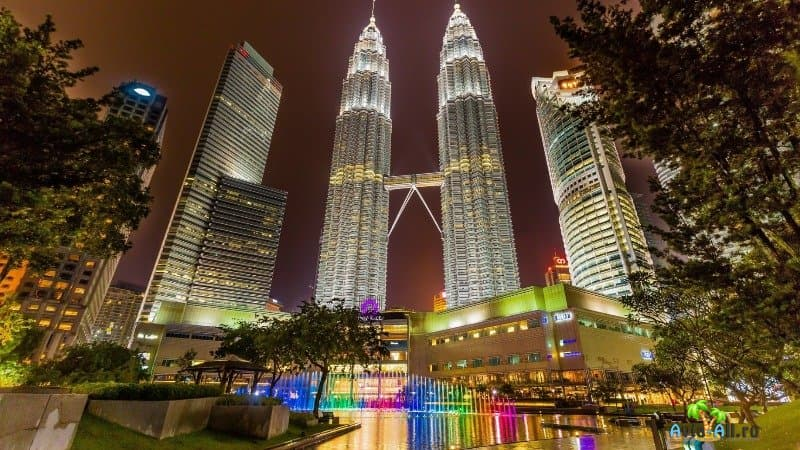

Малайзия находится в самом центре Юго-Восточной Азии. Южно-Китайское море делит страну на две части:
материковая западная часть и Восточная Малайзия (северо-западная часть мыса Борнео). На севере она граничит
с Таиландом, на юге - с Сингапуром, Брунеем, Индонезией. Общая площадь Малайзии - 330,4 тыс. кв. км. Крупнейшие
острова: Лангкави (со столицей Куах) и Пенанг (со столицей Джордж-Таун). Они расположены у северо-западного побережья Малайзии
Климат
Малайзии экваториальный, жаркий и влажный. Средние температуры в течение года +25-27°С.
Осадков - 1500 - 2000 мм в год. На западном побережье Малайзии (острова Лангкави, Пенанг, Пангкор)
сезон дождей выражен не ярко и приходится на май - сентябрь; на восточном побережье (острова Тиоман, Реданг)
ярко выраженный сезон дождей длится с октября по март.
Культура
Многонациональность Малайзии, а также множество религий и языков, распространенных здесь, способствовали
культурному разнообразию страны. Коренное население, называемое здесь «Оранг-Асли», малайцы, китайцы, индийцы — все
эти народы, проживающие в стране, привнесли свой вклад в её культуру. Длительное присутствие в регионе европейцев и
арабов также наложило свой отпечаток. Подобно соседнему Сингапуру, о Малайзии часто пишут, называя её «Азией в миниатюре».

Развлечения
Малайзия – это не только роскошные пляжи и первозданная экзотическая природа, но и целый калейдоскоп разнообразных
развлечений. Здесь будет чем заняться и любителям шопинга, и завсегдатаям ночных клубов, и ценителям игры в гольф.
На малазийских курортах создана уникальная инфраструктура развлечений, так что скучать туристам точно не придется.